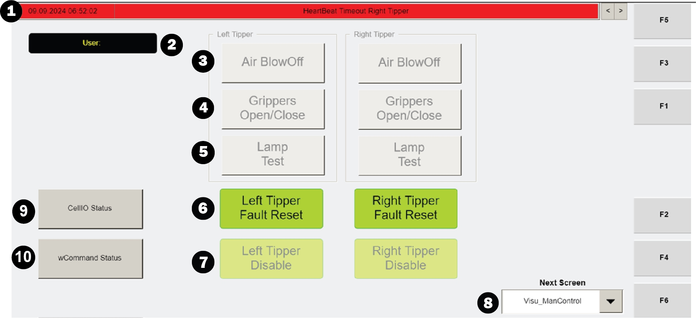

| Procedure ID | proc_reset_left_right_tipper_fault_from_visu_mancontrol_v1 |
|---|---|
| Title | Reset a LEFT/RIGHT Tipper Fault From the VISU_MANCONTROL Screen |
| Procedure Type | recovery |
| Primary Role | L2_support |
| Support Safe | Yes |
| Capability Tags | tipper_station_fault |
| Access Surface | tipper_hmi |
| Audience Roles | L2_support |
| Failure Pattern Tags | None |
| Validation Status | needs_sme_review |
| Merge Status | source_finalized |
On the Operator Station HMI VISU_MANCONTROL screen, use the LEFT/RIGHT TIPPER FAULT RESET button to clear the corresponding left or right tipper fault. Then verify the VISU_MANCONTROL informational banner/message area updates to reflect the reset (fault-related message cleared or replaced with a normal informational state).
Use when a LEFT or RIGHT tipper fault is indicated on the Operator Station HMI VISU_MANCONTROL screen and you need to reset the corresponding tipper fault using the screen’s manual control.

Responsible role: L2_support
Instruction:
Open the Operator Station HMI maintenance manual control screen named VISU_MANCONTROL.
Expected result:
The VISU_MANCONTROL screen is displayed with the informational banner (alarms/informational messages) and the LEFT/RIGHT TIPPER FAULT RESET buttons visible.
Responsible role: L2_support
Instruction:
Use the informational banner arrows on the right side of the banner to review the current alarm/informational messages so you can confirm what fault is present.
Expected result:
The informational banner message(s) corresponding to the current tipper fault are visible/identifiable via the banner navigation arrows.
Responsible role: L2_support
Instruction:
Select the correct side (LEFT or RIGHT) and press the corresponding LEFT/RIGHT TIPPER FAULT RESET button.
Expected result:
The corresponding tipper fault reset action is triggered for the selected side (LEFT or RIGHT).
Responsible role: L2_support
Instruction:
After pressing reset, re-check the informational banner messages (use the arrows again if needed) to confirm the fault-related message is cleared/updated.
Expected result:
The informational banner messages update to reflect that the corresponding LEFT or RIGHT tipper fault has been reset (fault-related message cleared or replaced with a new/normal informational state).
Stop or Escalate If: